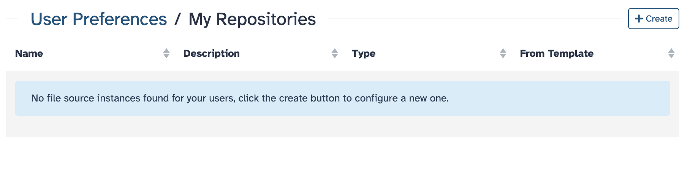
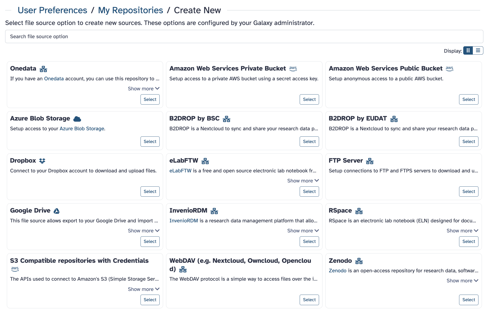
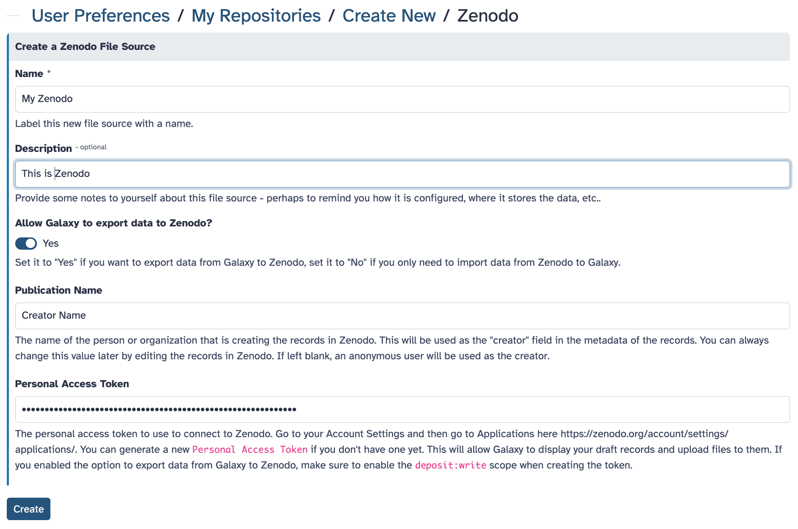
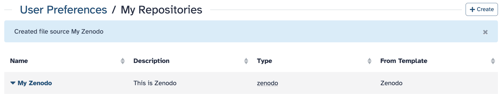
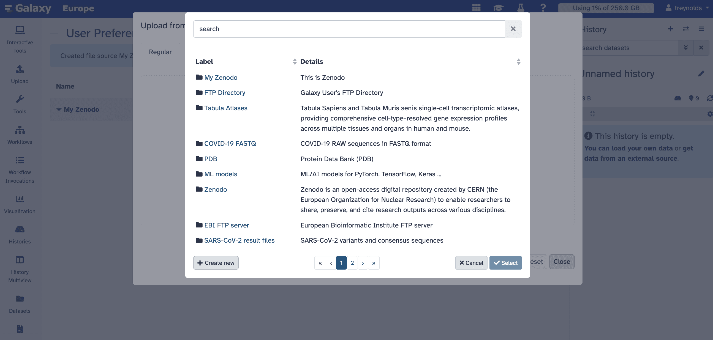
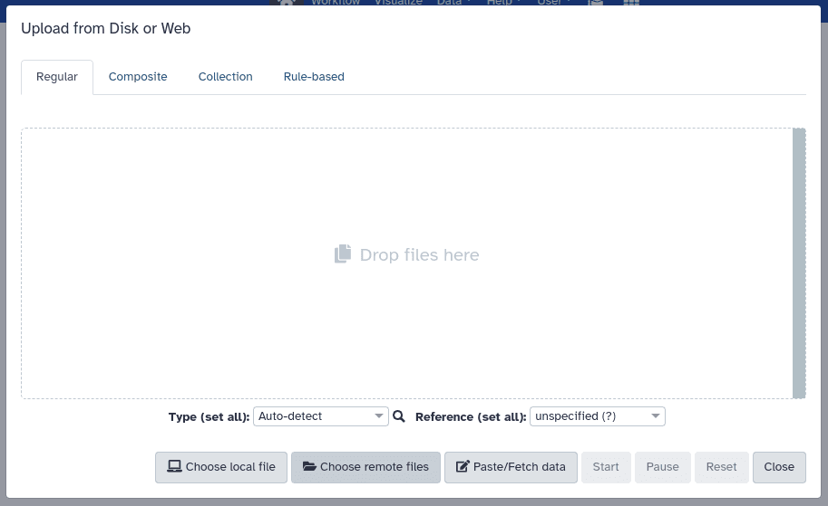
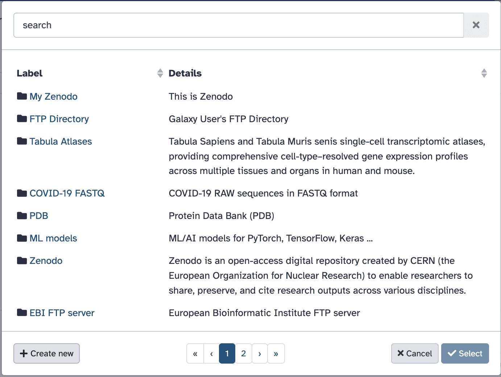
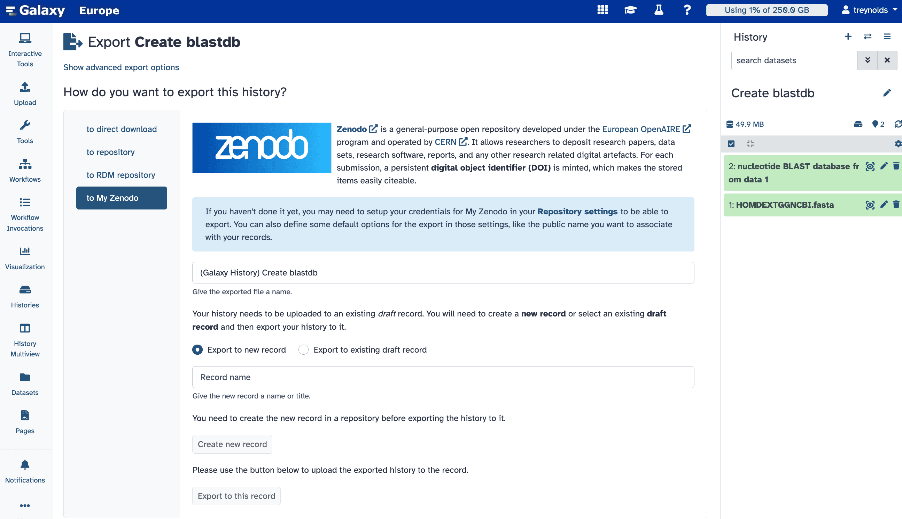

Uploading Data to Zenodo from Galaxy
| Author(s) |
|
| Reviewers |
|
OverviewQuestions:
Objectives:
How to connect Zenodo to Galaxy?
How to upload data from Galaxy to Zenodo
Apply the integration of Zenodo in Galaxy
Learn how to import records and files into Galaxy
Apply the integration to export Galaxy Histories to Zenodo
Generate a DOI that can be cited by others.
Time estimation: 30 minutesSupporting Materials:Published: Nov 6, 2025Last modification: Nov 6, 2025License: Tutorial Content is licensed under Creative Commons Attribution 4.0 International License. The GTN Framework is licensed under MITpurl PURL: https://gxy.io/GTN:T00565version Revision: 1
Discover a more streamlined approach to research data management with Galaxy’s integration with Zenodo.
AgendaIn this tutorial we will deal with:
Introduction
Zenodo can be connected to Galaxy, offering a streamlined experience in managing and analyzing your research data. With this integration, you can export research results directly from Galaxy to Zenodo, and import files from Zenodo into Galaxy for reproducible analysis workflows.
Zenodo
Zenodo is an open repository for all scholarship, enabling researchers from all disciplines to share and preserve their research outputs, regardless of size or format. Free to upload and free to access, Zenodo makes scientific outputs of all kinds citable, shareable and discoverable for the long term.
It’s worth noting that Zenodo, in October 2023, migrated to InvenioRDM as its underlying technical platform. This move signals a commitment to enhanced features and scalability, further bolstering the integration’s potential benefits for researchers.
Getting started
Setting up your PAT (Personal Access Token)
To be able to upload files and browse protected records, you need to create an account and set up your PAT (Personal Access Token). To create a new token:
Hands On: Create Your Personal Access Token
Open Zenodo and
Log inor create an account.Go to your
user settingsin the top right corner and select theApplicationstab.Then, click on
New tokenand give it a name and the necessary permissions.CommentYou will only be able to view and copy the access token when it is first created, so you should copy and securely store the token at this time. If you lose your copy of the access token, then you will need to generate a new one.
{kind=link}
How to connect Zenodo to Galaxy 25.0
The new Manage Your Repositories section is available under User → Preferences. Here’s how it works:
Hands On: Connecting to Galaxy
Navigate to
User → Preferences → Manage Your Repositories. If you haven’t set up any integrations yet, you’ll see an empty list.
Click
+ Createto configure a new integration. You’ll see a list of available integrations, includingS3, Dropbox, InvenioRDM, Zenodo, and more (depending on your Galaxy server).
Select
Zenodoto configure it and enter your credentials or relevant connection details. (This will be the access token created in the previous section if using the Zenodo sandbox.)
Once set up, the Zenodo integration, in this case named
My Zenodo, will appear in the list where you can manage or delete it.
The Zenodo integration, along with any other integrations that you have set up, will appear first when browsing import/export locations. You can find them by clicking on the
Uploadbutton in the activity bar.
{kind=link}
{kind=link}
{kind=link}
{kind=link}
{kind=link}
There are a number of additional repository types that you can connect to Galaxy and use to import and export data.
Here, we are going to briefly explain how you can Bring-Your-Own-Data to Galaxy or export your dataset, results, or history to 3rd party repositories. In order to add a new repository to your account follow these steps:
- Click on your Username on top right part of the website and then click on
Preferences.- From the middle panel, click on the
Manage Your Repositories(previously calledManage your remote file sources).- Click on the
+ Createbutton on top of the page. Here, you get multiple options to connect various repositories to your account.For all of the possible repositories, you should fill the following fields:
- In the
Namesection, give a name to your repository. This name will be used to choose the repository on Galaxy for importing or exporting datasets.- Optionally, you can provide a
Descriptionfor this repository. This is a note for yourself.Hands-on: Choose Your Own TutorialThis is a "Choose Your Own Tutorial" (CYOT) section (also known as "Choose Your Own Analysis" (CYOA)), where you can select between multiple paths. Click one of the buttons below to select how you want to follow the tutorial
Select the repository you like to add to your Galaxy account.
If you have an Onedata account, you can use this repository to import and/or export your data directly from and to Onedata. The minimal supported Onezone version is 21.02.4. More information on Onedata can be found on Onedata’s website.
There are extensive tutorials for setting up and utilizing of OneData on Galaxy Training Network (GTN). At the moment, we have the following tutorials for Onedata on GTN:
- Getting started with Onedata distributed storage
- Importing (uploading) data from Onedata
- Exporting to Onedata remote
- Setting up a dev Onedata instance
- Configuring the Onedata connectors (remotes, Object Store, BYOS, BYOD)
In short, you can connect your Galaxy account to an Onedata repository as follows:
- In the
Onezone domainfield, please fill in the address to yourOnezonedomain. It could be something like “datahub.egi.eu”.- Using the
Writable?option you can decide whether to grant access to Galaxy to export (write) to your Onedata or not.- You should provide an
Access Tokento Galaxy so it can read (import) and write (export) data to your OneData. Read more on access tokens here. You can limit the access to read-only data access, unless you wish to export data to your repository (write permissions are needed then).- In case you want to disable validation of SSL certificates, you can use
Disable tls certificate validation?option. However, we strongly recommend you to not use this option unless you know what your are doing.- Click on
Create.To connect an AWS private bucket to your Galaxy account, you need to submit the following information on the form:
- First, read the Manage access keys for IAM (Identity and Access Management) users documentation of AWS. Also, you should be familiar with Buckets (Buckets overview).
- Please fill in the
Access Key ID(something likeAKIAIOSFODNN7EXAMPLE) andSecret Access Key(similar towJalrXUtnFEMI/K7MDENG/bPxRfiCYEXAMPLEKEY) in the corresponding fields on the Galaxy interface.- Please enter the URL to your Bucket (for example,
https://amzn-s3-demo-bucket.s3.us-west-2.amazonaws.com) in theBucketsection.- Click on
Create.To connect anonymously to an AWS public bucket using your Galaxy account, you need to enter the Bucket address in the
Bucketsection. For more information about AWS Bucket, please read AWS documentaion. Click onCreate.To setup access to your Azure Blob Storage within the Galaxy, follow the steps:
- Provide the name of your Azure Blob Storage account in the
Container Namefield. More information about container’s name could be found on the Microsoft documentation here.- Fill the
Storage Account Namebased on your account. More information is available on the Microsoft website.- Using the
Hierarchical?option you can determine whether your storage is hierarchical or not. More information on Data Lake Storage namespaces can be found in the Azure Blob Storage documentation.- Please provide the account access key to your Azur Blob Storage account, using
Account Keyfield. This is the documentation on Managing storage account access keys.- If you want to be able to export data to your Azure Blob Storage container, please set
Writable?option to “Yes”.- Click on
Create.
- We recommend to first login to your Dropbox account.
- On the Galaxy website, click on the
Createbutton of theDropboxsection. You will be redirected to the Dropbox website for authentication.- You have to login there and grant access for the Galaxy.
- Click on
Create.eLabFTW is a free and open source electronic lab notebook from Deltablot. Each lab can either host their own installation or go for Deltablot’s hosted solution. Using Galaxy, you can connect to an eLabFTW instance of your choice.
- Provide a URL with the protocol (http or https) and the domain name in the
eLabFTW instance endpoint (e.g. https://demo.elabftw.net)field.- If you want to let Galaxy to export data to your eLabFTW, please set the
Allow Galaxy to export data to eLabFTW?to “Yes” to grant required access to Galaxy. Keep in mind that your API key must have matching permissions.- You should provide an
API Keyto your eLabFTW as well. To do so, navigate to the Settings page on your eLabFTW server and go to the API Keys tab to generate a new key. Choose “Read/Write” permissions to enable both importing and exporting data. “Read Only” API keys still work for importing data to Galaxy, but they will cause Galaxy to error out when exporting data to eLabFTW. You will receive a string (similar to2-50dd721027f56a2e119b3bdbf64f4b8518b3f82b97e7876d56dad74109c8be73d8919b88097d3c9eb8952) and you should enter this in theAPI Keyfield of Galaxy interface.- Click on
Create.You can setup connections to FTP and FTPS servers to import and export files as follows:
- Provide the address to your FTP server using the
FTP Hostfield.- If you want to login with a specific user, provide the username in the
FTP Userfield. Leave this blank to connect to the server anonymously (if allowed by the server).- If you want to export data to this FTP, you should set the
Writable?option to “Yes”.- Please specify the port that Galaxy should use to connect to your FTP server using the
FTP Portfield.- In the
FTP Passwordfield provide the password to connect to the FTP server. Leave this blank to connect to the server anonymously (if allowed by the server).- Click on
Create.
- We recommend to login to your Google account first.
- On the Galaxy website, click on
Selectbutton ofExport to Google Drive. You will be redirected to the Google.- Pick the account that you want to connect to Galaxy for import and export. Grant the required permissions.
- You will be back on the Galaxy portal and you can access your Google Drive for import and export (depending on your how you set up your accuont).
- Click on
Create.InvenioRDM is a research data management platform that allows you to store, share, and publish research data. You can connect to an InvenioRDM instance of your choice by following these steps:
- Please fill the address to your InvenioRDM in the following field:
InvenioRDM instance endpoint(for example, https://inveniordm.web.cern.ch/). This should include the protocol (http or https).- Use the
Allow Galaxy to export data to InvenioRDM?option to give permission to Galaxy to export data to your repository or not.- Click on
Create.
- You should fill
Publication Namewith a name as the “creator” metadata of the records. This could be a person or an organization. You can later modify this. If left blank, an anonymous user will be used as the creator.- You should also enter your
Personal Access Token. You can get this information in your InvenioRDM instance. Navigate to Account Settings. Then, go to Applications to generate a new token. This will allow Galaxy to display your draft records and upload files to them.- Click on
Create.Using WebDAV you can connect various services that supports WebDAV protocol such as OwnCloud and NextCloud among others. The configuration of WebDAV is slightly variable from service to service but the general principles apply everywhere.
- Provide the server address to this repository in the
Server Domainfield.- In the
WebDAV server Path, you have to provide the path on this server to WebDAV.- In the
Usernamefield, you should write the username you use to login to this server.- You can grant write access for this repository using the
Writable?(set toYes) and therefore make it possible to export datasets, or histories to your connected repository.- Click on
Create.As an example, if I want to connect my nextCloud repository to my Galaxy account, I should login to my nextCloud server and find the information from
File settings(bottom left of the page) under the WebDAV section to fill this template. It could be something like:https://server_address.com/remote.php/dav/files/username_or_text. Here, theServer Domainishttps://server_address.comandWebDAV server Pathisremote.php/dav/files/username_or_text.In some cases, you may need to activate some features on your ownCloud or nextCloud to allow this integration. For example, some nextCloud servers require the user to use “App Passwords”. This can be done using the
Settings > Security > Devices & sessions > Create new app password.Zenodo is an open-access repository for research data, software, publications, and other digital artifacts. It is developed and maintained by CERN and funded by the European Commission as part of the OpenAIRE project. Zenodo provides a free platform for researchers to share and preserve their work, ensuring long-term access and reproducibility. Zenodo is widely used by researchers, institutions, and organizations to share scientific knowledge and comply with open-access mandates from funding agencies.
- Using the
Allow Galaxy to export data to Zenodo?, you can decide whether you like to give write access to Galaxy or not. Set it to “Yes” if you want to export data from Galaxy to Zenodo, set it to “No” if you only need to import data from Zenodo to Galaxy.- Provide a name for the “creator” metadata of your records on Zenodo using the
Publication Namefield. You can always change this value later by editing the records in Zenodo. If left blank, an anonymous user will be used as the creator.- You have to provide a
Personal Access Tokenfrom your Zenodo account to Galaxy. To do so, you need to log into your account. Then, visit this site: https://zenodo.org/account/settings/applications/. Alternatively, you can click on your username on top right and then click on “Applications”. Here, you need to create a “Personal Access Token”. This will allow Galaxy to display your draft records and upload files to them. If you enabled the option to export data from Galaxy to Zenodo, make sure to enable the deposit:write scope when creating the token.- Click on
Create.Importing data to your Galaxy account
When you connect a repository to your Galaxy account, you can use it to import data to Galaxy. To do so, you can click on the
UploadIcon on the left panel. In the poped up window, you can click onChoose from repositoryto select a repository that you have added to your account. Navigate to a file that you want to upload to your Galaxy account, check the box of the file, and click onSelect. You can determine the format of the file, give it a name, and then click onStartto upload the file to your Galaxy account.Exporting histories, datasets, and results to connected repositories
If you have given Galaxy the permission to write to your repository, you can export your histories, datasets and reulsts in the history to that repository.
Histories
If you want to export a history, you should click on the History Options icon (galaxy-history-options) on the right panel. Then, you can click on
Export History to File. Next, you can click onto repositoryon the middle panel. If you click on theClick to select directory, there will be a pop up window. Here, you can pick a repository that you have added to your account and when you are in that repository, click onSelect. You can give aNameto your exported history, so you can find it easier in your connected repository. Finally, click onExportto write the history to your repository. Similarly, you can useto RDM repositoryorto Zenodoinstead of theto repositoryoption in the middle panel to export your history to connected RDM repositories or Zenodo.To have more options on exporting your history, you can click on
Show advanced export optionson top of the middle panel. This provides further control over the format and datasets that will be included in your exported history.Datasets
If you are interested to export a single dataset or results to a connected repository, you can use a tool called Export datasets.
- Select the desired option from
What would you like to export?.- Using the
Directory URIoption, you canSelecta connected repository. You can also give it a directory name here.- We recommend to export the metadata with your datasets and results using the
Include metadata files in export?.
Importing records and files into Galaxy
Once you have connect Zenodo to Galaxy, you will be able to import records and files stored in Zenodo into Galaxy.
Hands On: Importing Files
Open the Upload tool, and select
Choose remote files
Search for the Zenodo instance. Remember that this will only appear if the Zenodo plugin is configured to connect to Zenodo in your Galaxy instance.

{kind=link}
{kind=link}
Once you have selected Zenodo, you can browse public records and import them into your Galaxy history. You can choose to import the full record or individual files in the same way you would import files from any other remote source.
Exporting your Galaxy history
You can export your history directly to Zenodo. A benefit of publishing your history on Zenodo is that Zenodo will generate a DOI for your history. You can then include this DOI in your publication and it can be used by other researchers to cite your work.
Hands On: Exporting a History
From the history menu galaxy-history-options , you can select
Export History to FileThen choose
to My Zenodo.You can decide whether to create a new record or upload the history to an existing draft record.

{kind=link}
You can always edit the record metadata directly from the Zenodo web interface. Once you are satisfied with the record, you can publish it, generating a DOI that others can use to cite your research.
Conclusion
In this tutorial, we have connected Zenodo to a Galaxy instance. We have also imported files and records from Zenodo into Galaxy and exported a Galaxy History to Zenodo.
To see how to connect any InvenioRDM-compatible respository to Galaxy, see the tutorial, Integrating InvenioRDM-compatible Repositories with Galaxy.
References
You've Finished the Tutorial
Key points
Zenodo can be connected to Galaxy
Records and files can be imported into Galaxy
Galaxy Histories are directly exportable to Zenodo
Frequently Asked Questions
Have questions about this tutorial? Have a look at the available FAQ pages and support channelsFeedback
Did you use this material as an instructor? Feel free to give us feedback on how it went.
Did you use this material as a learner or student? Click the form below to leave feedback.

Citing this Tutorial
- Tristan Reynolds, David López, Uploading Data to Zenodo from Galaxy (Galaxy Training Materials). https://training.galaxyproject.org/training-material/topics/fair/tutorials/zenodo-in-galaxy/tutorial.html Online; accessed TODAY
- Hiltemann, Saskia, Rasche, Helena et al., 2023 Galaxy Training: A Powerful Framework for Teaching! PLOS Computational Biology 10.1371/journal.pcbi.1010752
- Batut et al., 2018 Community-Driven Data Analysis Training for Biology Cell Systems 10.1016/j.cels.2018.05.012
@misc{fair-zenodo-in-galaxy, author = "Tristan Reynolds and David López", title = "Uploading Data to Zenodo from Galaxy (Galaxy Training Materials)", year = "", month = "", day = "", url = "\url{https://training.galaxyproject.org/training-material/topics/fair/tutorials/zenodo-in-galaxy/tutorial.html}", note = "[Online; accessed TODAY]" } @article{Hiltemann_2023, doi = {10.1371/journal.pcbi.1010752}, url = {https://doi.org/10.1371%2Fjournal.pcbi.1010752}, year = 2023, month = {jan}, publisher = {Public Library of Science ({PLoS})}, volume = {19}, number = {1}, pages = {e1010752}, author = {Saskia Hiltemann and Helena Rasche and Simon Gladman and Hans-Rudolf Hotz and Delphine Larivi{\`{e}}re and Daniel Blankenberg and Pratik D. Jagtap and Thomas Wollmann and Anthony Bretaudeau and Nadia Gou{\'{e}} and Timothy J. Griffin and Coline Royaux and Yvan Le Bras and Subina Mehta and Anna Syme and Frederik Coppens and Bert Droesbeke and Nicola Soranzo and Wendi Bacon and Fotis Psomopoulos and Crist{\'{o}}bal Gallardo-Alba and John Davis and Melanie Christine Föll and Matthias Fahrner and Maria A. Doyle and Beatriz Serrano-Solano and Anne Claire Fouilloux and Peter van Heusden and Wolfgang Maier and Dave Clements and Florian Heyl and Björn Grüning and B{\'{e}}r{\'{e}}nice Batut and}, editor = {Francis Ouellette}, title = {Galaxy Training: A powerful framework for teaching!}, journal = {PLoS Comput Biol} }
Funding
These individuals or organisations provided funding support for the development of this resource


You can use Ephemeris's
shed-tools installcommand to install the tools used in this tutorial.shed-tools install [-g GALAXY] [-a API_KEY] -t <(curl https://training.galaxyproject.org/training-material/api/topics/fair/tutorials/zenodo-in-galaxy/tutorial.json | jq .admin_install_yaml -r)Alternatively you can copy and paste the following YAML
--- install_tool_dependencies: true install_repository_dependencies: true install_resolver_dependencies: true tools: []